Edward Vul, Ph.D. is conducting a research study about multiple object tracking.
You have been asked to participate because you are an undergraduate here at UCSD.
PROCEDURES. If you agree to participate in this study, the following will happen to you:
1. You will sit at the computer and see displays of circle objects and some of them will be highlighted as targets.
2. You will try to track them for a period of time and report your tracked targets by clicking the objects.
RISKS. No potential risks or discomforts are anticipated except for the possibility that some tasks
may be slightly boring.
PAYMENT/REMUNERATION. In consideration of your time and inconvenience, you will receive half hour of
course credit. The procedures and length of participation will last approximately 20 minutes.
RIGHTS. You may call the UCSD Human Research Protection Program at 858-657- 5100 to ask about your
rights as a research subject or to report research-related problems.
BENEFITS. There will be no direct benefit to you from these procedures. However, the investigator may
learn more about basic questions pertaining to attention, memory, perception, cognition.
EXPLANATION. The researcher has explained this study to you and answered your questions. If you have
questions or research related problems, you may reach Edward Vul at 858-534- 4401.
VOLUNTARY NATURE OF PARTICIPATION. Participation in research is entirely voluntary. You may refuse to
participate or withdraw at any time without penalty.
CONFIDENTIALITY. Research records will be kept confidential to the extent allowed by law. As with all
research, there is also the possibility of loss of confidentiality. Information from participants will be
identified by a study number. The database which relates the study number to a specific subject will be
maintained in the study coordinators office.
COPY OF CONSENT. You have received a copy of this consent document to keep and a copy of the
Experimental Bill of Rights.
Welcome to the Multiple Object Tracking study! (Chrome user only, you can switch browser by exiting the currect website and click the link on SONA website using chrome)
Here is a display with a fixation point at the center. Click "Start" button to start the trial.
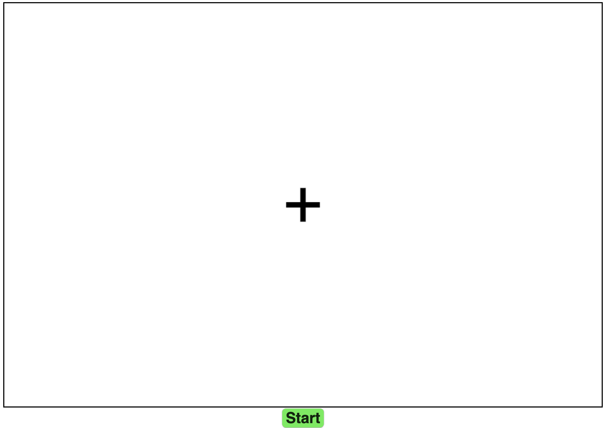8 objects are presented as 4 pairs located at 4 corners.
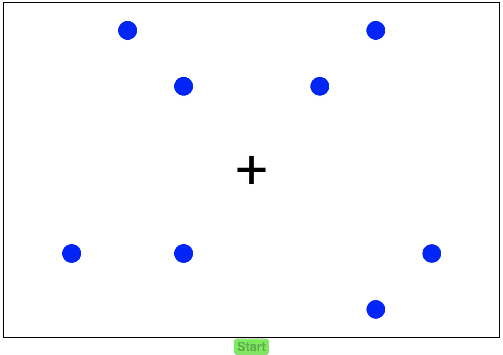One of the objects in each pair is highlighted as the target with a black circle for 3 seconds.
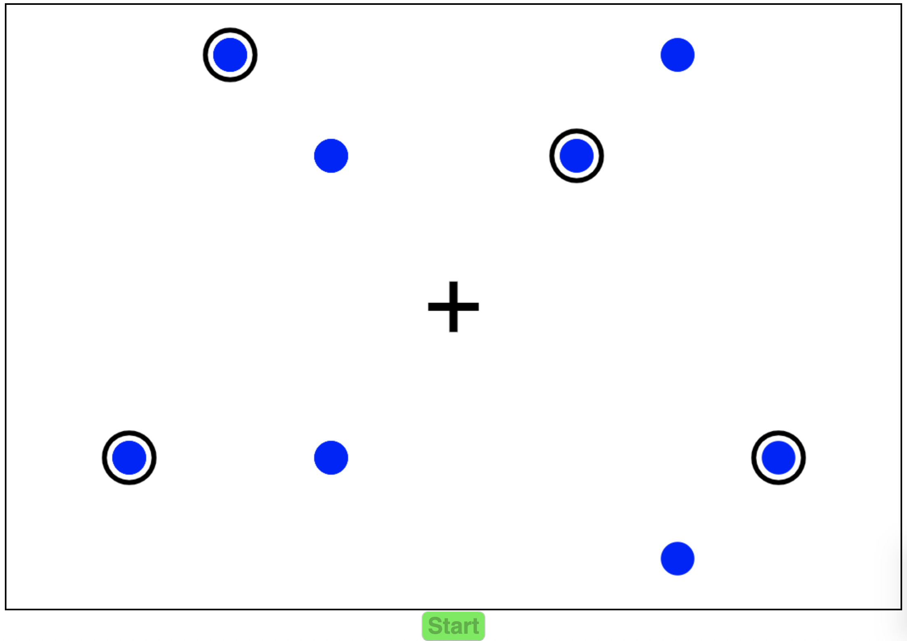
The highlights disappear and 8 objects start to move around in pairs and transition across the vertice. Your
task is to track the targets for 8 seconds (8 transitions）while fixating at the fixation point. During the 8 seconds of tracking, the objects will move while they are well separated for most of the time.
There are four different types of trials illustrated below:
Type one: Throughout tracking, the objects are all well separated all the time.
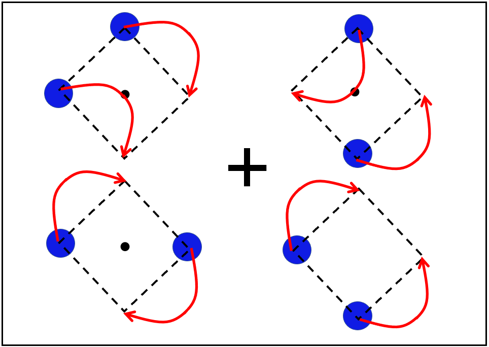
Type two: Throughout tracking, the objects are all well separated except for four transitions where one
of the random pairs of objects will intercept at the center of each quadrant will be randomly selected (each
pair only intercepts once). There are two types of interception shown below (opposite vs. neighboring
positions).
Two objects intercept starting from opposite positions.
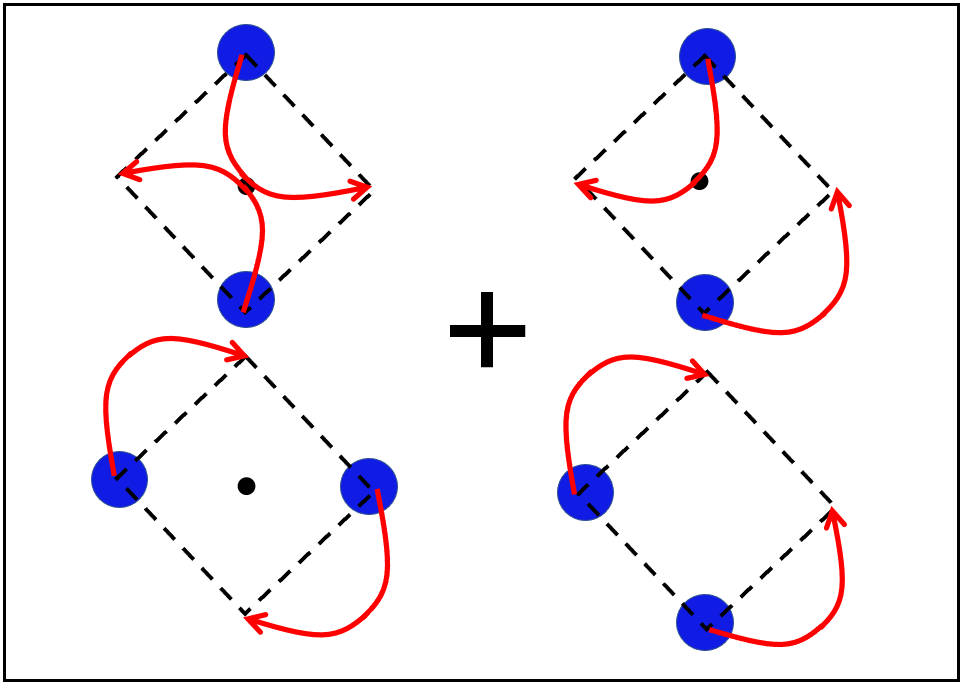
Two objects intercept starting from neighboring positions.
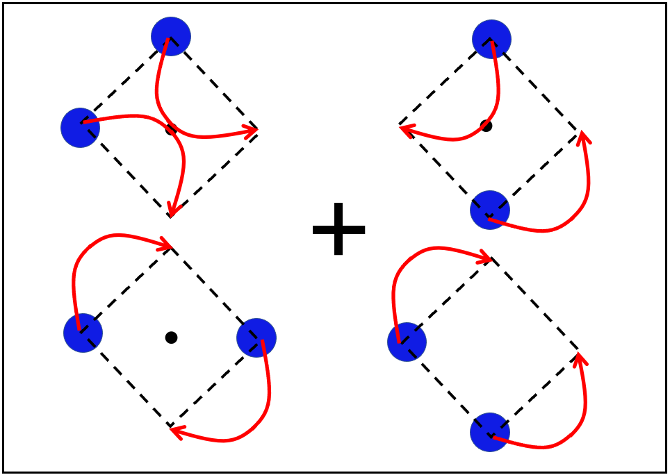
Remember, there are 3 similar transitions for the other three pairs so that all the pairs undergo the interception by the end of the trial.
Type three: Throughout tracking, the objects are all well separated except for two transitions where two
of the random pairs of objects will intercept at the center of each quadrant will be randomly selected (each
pair only intercepts once). There are two types of interception shown below (starting from opposite vs. neighboring positions).
Two objects intercept starting from opposite positions.
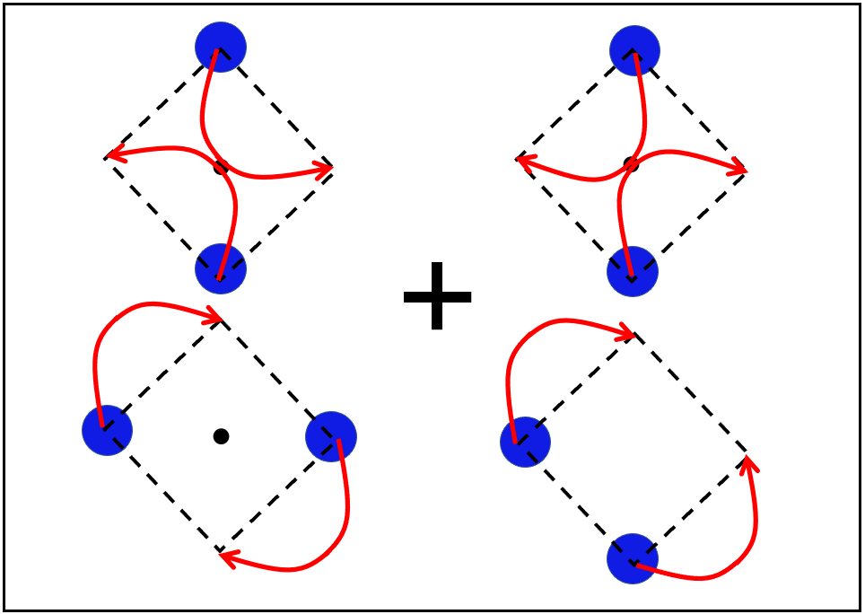
Two objects intercept starting from neighboring positions.
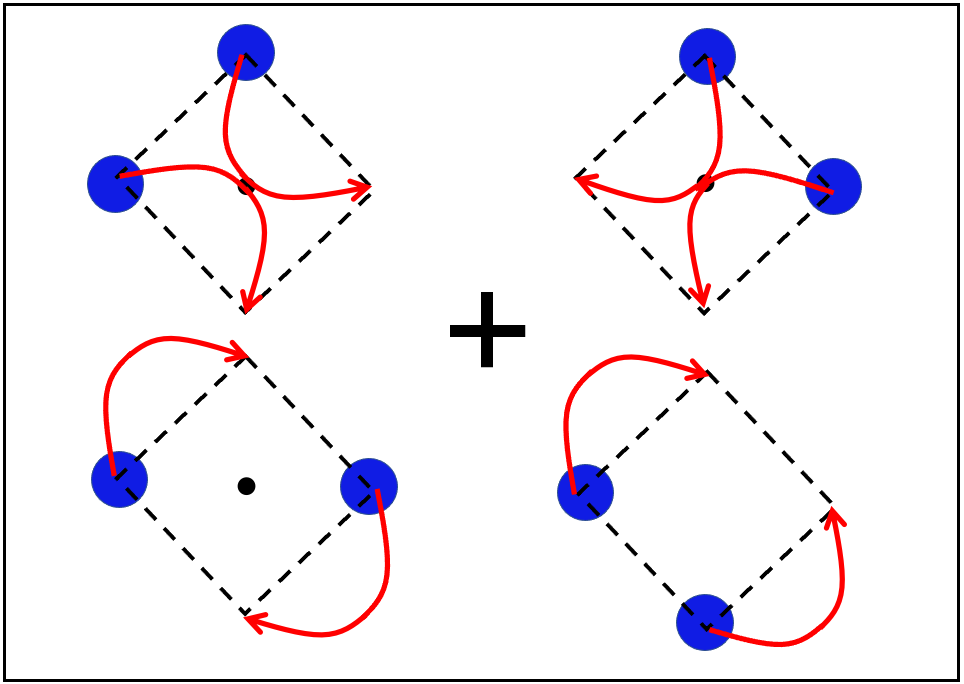
Remember, there is another similar transition for the other two pairs so that all the pairs undergo
the interception by the end of the trial.
Type four: Throughout tracking, the objects are all well separated except for only transition where all
four pairs of objects will intercept simultaneously at the center of each quadrant.There are two types of
interception shown below (starting from opposite vs. neighboring positions).
Two objects intercept starting from opposite positions.
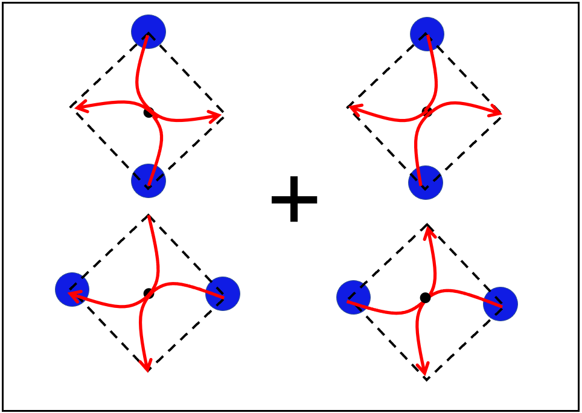
Two objects intercept starting from neighboring positions.
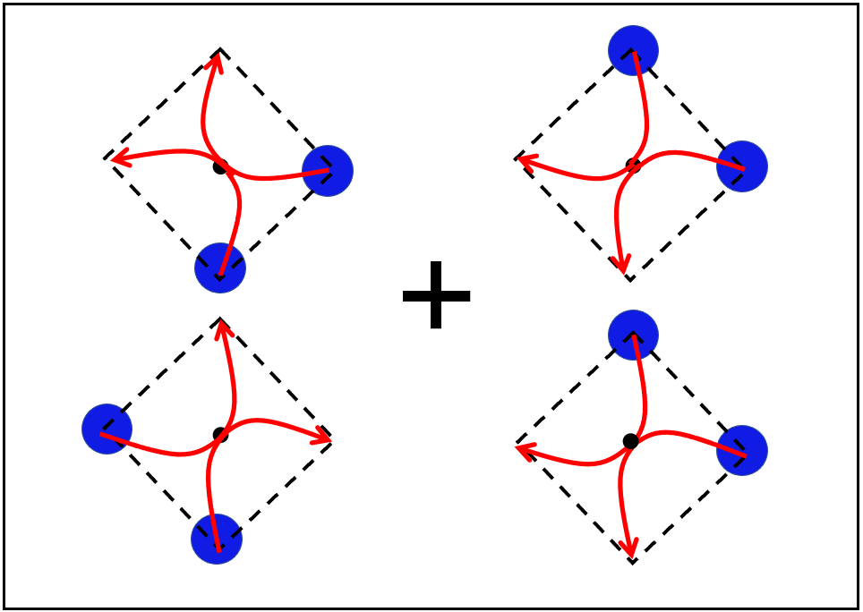
After 8 seconds of tracking, report the targets by clicking on the objects and the selected ones will be highlighted with black circles. Make sure you select one from each pair (total 4 targets). The click will be disabled if you are trying to select both targets from the same pair. To change your decision, you have to first unclick the one you clicked from the pair and then click the other one. Click "Submit" button to submit the result.
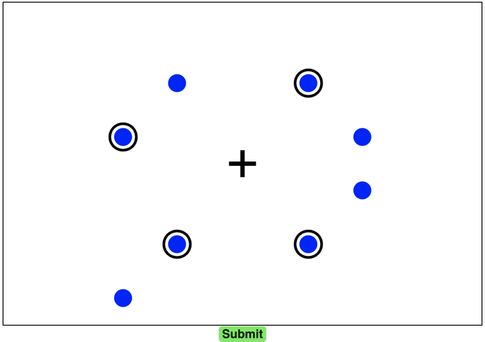At the end of each trial, you will receive feedback. The green highlighted objects are the ones you successfully tracked and the red ones are the incorrect targets you selected.
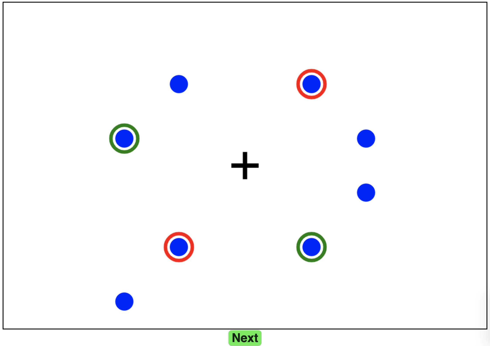Thank you for participating in the experiment!